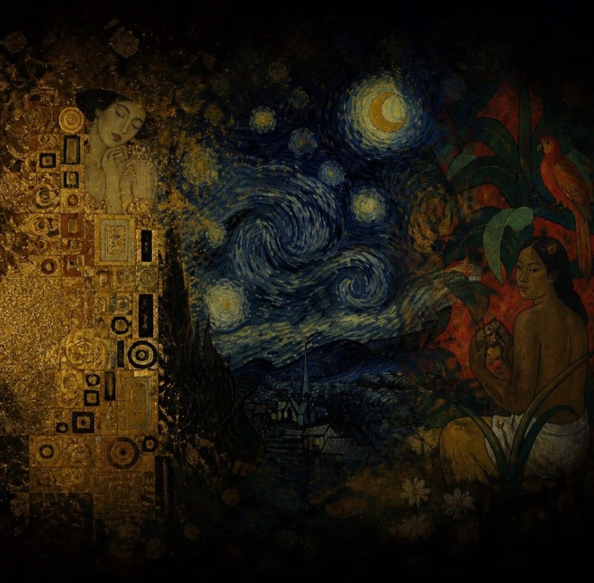

Правила созданы,
чтобы их
нарушать
Конец XIX века. Искусство выходит за рамки академизма. Климт бросает вызов традициям, окуная мир в золото и орнаменты. Ван Гог деформирует пространство ради чистой эмоции. Гоген сбегает от цивилизации на поиски утраченного рая. Эта выставка о тех, кто не побоялся смотреть иначе.
смотреть выставку →Архитекторы нового зрения
Они не вписывались в свое время. Они были отвергнуты критиками,не поняты обществом, но не отступили. Узнайте истории тех, кто предпочел нищету и непонимание компромиссу. Три судьбы, которые стали фундаментом искусства XX века.

Поль Гоген
Бросил успешную карьеру брокера, семью и Париж, чтобы отправиться на край света. Он искал рай, нетронутый современным миром. И нашел его не в географии, а в чистом, первобытном цвете Таити.

Винсент Ван Гог
Он продал при жизни лишь одну картину. Его считали безумцем, который видит мир искаженным. Но Ван Гог просто писал энергию вещей — как трава тянется к солнцу, как ночь дышит и как страдание выглядит в желтом цвете.

Густав Климт
Он отказался писать портреты правительственных чиновников так, как этого требовал ака[...] Вместо этого он погружал своих моделей в сияющие золотые панцири орнаментов, превращая женщин во властных богинь и вызывая ярость консервативной Вены.
Девять сюжетов,
сломавших систему
Девять холстов, навсегда изменивших ход искусства. Откажитесь от привычного взгляда на реальность. Рассмотрите каждый мазок, каждую тень и каждый блик. Здесь нет случайных деталей — есть только чистая, неконтролируемая эмоция. Выберите художника, чей бунт вам ближе.
вернитесь в серый мир иначе
Выставка окончена, но бунт продолжается. Климт, Ван Гог и Гоген доказали: чтобы увидеть настоящее искусство, достаточно перестать смотреть на мир ... Поделитесь этой выставкой с теми, кто тоже готов нарушать правила.
вернуться на главную →